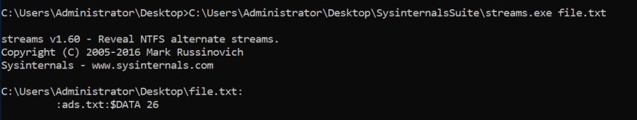

file & disk utilities
File & Disk Utilities
Sigcheck
Sigcheck is a command-line utility that shows file version number, timestamp information, and digital signature details, including certificate chains. It also includes an option to check a file’s status on VirusTotal, a site that performs automated file scanning against over 40 antivirus engines, and an option to upload a file for scanning.
Use Case: Check for unsigned files in C:\Windows\System32.
Command: sigcheck -u -e C:\Windows\System32 -accepteula
Parameter usage:
• -u "If VirusTotal check is enabled, show files that are unknown by VirusTotal or have non-zero detection, otherwise show only unsigned files."
• -e "Scan executable images only (regardless of their extension)"
Streams
"The NTFS file system provides applications the ability to create alternate data streams of information. By default, all data is stored in a file's main unnamed data stream, but by using the syntax 'file:stream', you are able to read and write to alternates." (official definition)
Alternate Data Streams (ADS) is a file attribute specific to Windows NTFS (New Technology File System). Every file has at least one data stream ($DATA) and ADS allows files to contain more than one stream of data. Natively Window Explorer doesn't display ADS to the user. There are 3rd party executables that can be used to view this data, but Powershell gives you the ability to view ADS for files.
Malware writers have used ADS to hide data in an endpoint, but not all its uses are malicious. When you download a file from the Internet unto an endpoint, there are identifiers written to ADS to identify that it was downloaded from the Internet.
Command: streams <File_Name>
Example:

The above command displays all the streams pertaining the FIle_Name
SDelete
SDelete is a command line utility that takes a number of options. In any given use, it allows you to delete one or more files and/or directories, or to cleanse the free space on a logical disk.